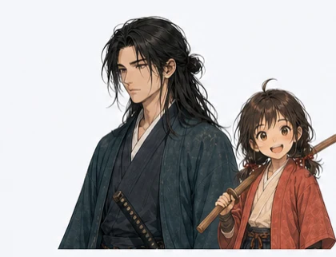

返回上一页
N1 読解特訓
错题中心
0

仁 · 読解指南
选择今天想要进行的阅读练习吧，kiki。
继续练习
上次的阅读真题
继续 →
短文理解 · 练习目录
N1
N2
N3
01
年度练习
按考试年份完成真题阅读
›
02
分类练习
按同类题目集中练习
›
随机练习
从当前题型随机抽取一篇文章
开始随机小测 ›
仁 · 読解指南
择一卷真题，静心读罢；莫急，文意自会显现，kiki。
短文理解
N1
N2
N3
‹
返回分类目录
薰 · 復習中
咦，这几招刚才没看清……没关系，再陪我走一遍吧，这次一定能抓住它！
阅读错题分类
N1
N2
N3
‹
返回错题分类